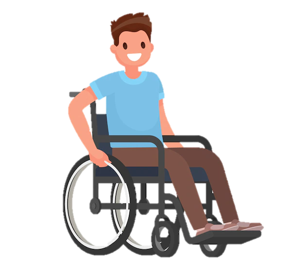

Portal
educar é
AMAR

| Tipos de deficiências | Vídeos | Áudios dos vídeos |
|---|---|---|
| *Vídeos de autoria própria* | ||
| Deficiência Visual | Como trabalhar com deficientes visuais em sala de aula! | Áudio |
| Que cuidados o professor deve tomar ao trabalhar com deficientes visuais? | Áudio | |
| Como trabalhar o conceito de deficiência visual no contexto escolar! | Áudio | |
| Como fazer atividades adaptadas para alunos especiais? | Áudio | |
| Deficiência Motora | Quais são as deficiências motoras? | Áudio |
| Como trabalhar a deficiência motora na sala de aula? | Áudio | |
| Plano de Estudo Individualizado (PEI)! | Áudio | |
| Deficiência Mental | O que é deficiência mental, exemplos! | Áudio |
| Retardo Mental Leve | Áudio | |
| Retardo Mental Moderado | Áudio | |
| Retardo Mental Grave | Áudio | |
| Retardo Mental Profundo | Áudio | |
| Transtorno do Déficit de Atenção com Hiperatividade (TDAH) | Áudio | |
| Deficiência Auditiva | Quais são os direitos do aluno com deficiência auditiva na escola? | Áudio |
| O que o professor deve fazer para o aprendizado do aluno surdo / deficiente auditivo? | Áudio | |
| Como são realizadas a inclusão de alunos com esse tipo de deficiência nas turmas? | Áudio | |